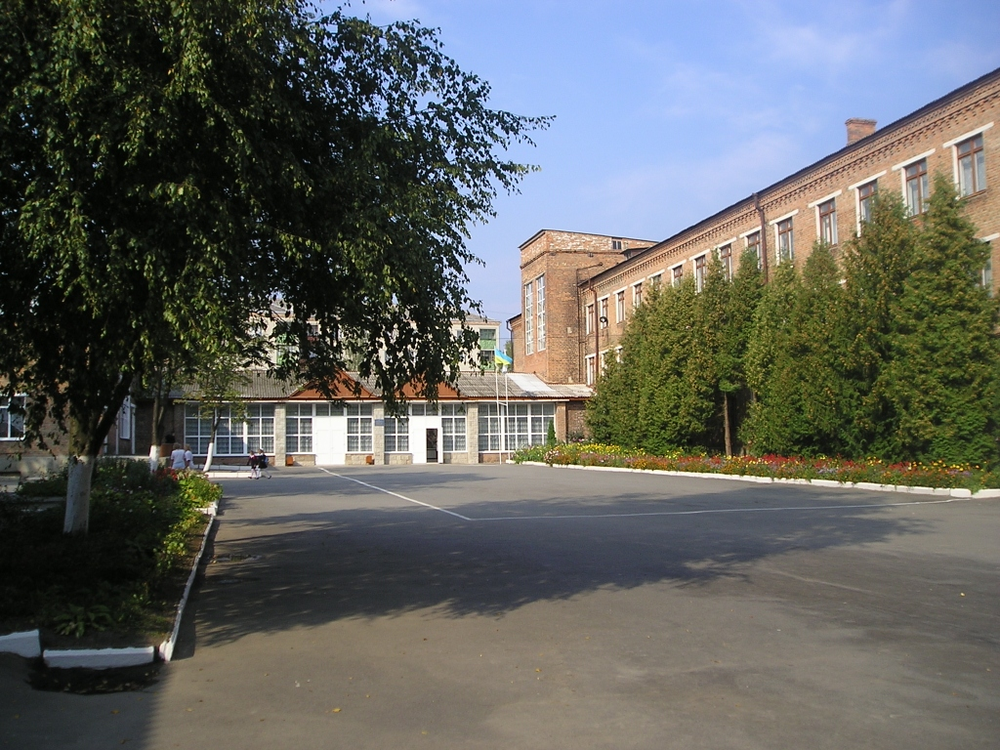
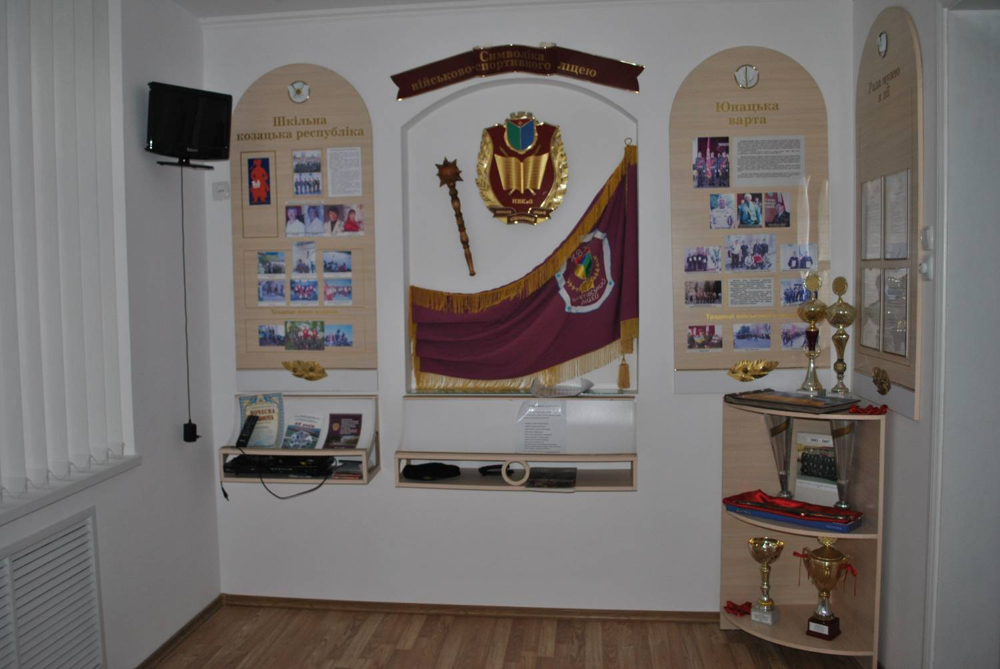
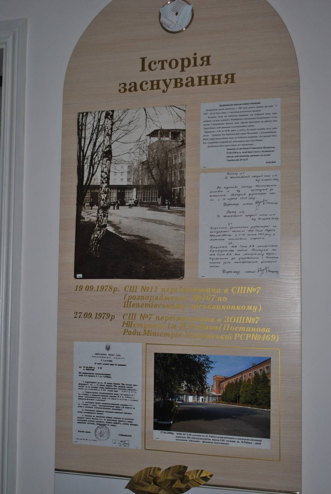
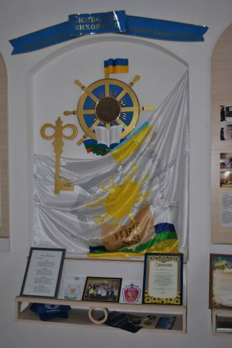
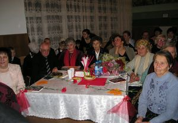
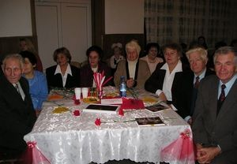

Зображення
     З історії заснування
Будівництво школи було розпочато у 1965 р., робота тривала 2 роки. 5-го листопада 1967 року було перерізано символічну стрічку і до навчального закладу зайшли перші учні та перші педагоги.
У вересні 1978 року школу було перейменовано у середню школу №7.
У вересні 1979 року Рада Міністрів Української РСР постановила присвоїти ім’я українського радянського письменника Натана Рибака середній школі №7 і надалі іменувати її – Шепетівська загальноосвітня школа №7 імені Натана Рибака.
Серед творів цього українського письменника відомими є «Переяславська Рада», «Час сподівань та звершень», багато інших.
З ряду документів, які вдалось відшукати, дізналися, що наш земляк брав активну участь в суспільному житті міста, був комсомольським активістом. Тут, у Шепетівці, писалися його перші твори, книги.
Навчально-виховний комплекс №3 у складі " Загальноосвітня школа I-III ступенів ім. Н.Рибака та ліцей з посиленою військово-фізичною підготовкою" (Колишня середня школа № 11).
5 листопада 1967 року було перерізано символічну стрічку і до навчального закладу - школи №11 зайшли перші учні та перші педагоги. Понад 860 учнів сіли за його парти.
Кожен із нас, звертаючись до минулого, неодмінно згадує того, про кого хочеться сказати: « Він створив нас, нашу школу». В одинадцятій - це перший директор Олександр Михайлович Рожепа – фронтовик, ветеран Великої Вітчизняної війни. Поряд із ним на шкільний поріг вступили вчителі :
- Євгена Семенівна Августинович (вчитель початкових класів)
- Валентина Володимирівна Шпаченко (вчитель біології)
- Лідія Павлівна Пічик (вчитель історії)
- Володимир Романович Янішевський (вчит трудового навчання ).
- Ніна Денисівна Макуха (завуч школи),
- Марія Яківна Шулик (вчитель української мови та літератури),
- Галина Петрівна Вознюк (вчитель фізичного виховання),
- Володимир Антонович Доровський (вчитель музики і співів),
- Любов Василівна Горбарук (вчитель трудового навчання),
- Ганна Назарівна Суддя (вчитель початкових класів),
- Валентина Юхимівна Вільбіцька (вчитель початкових класів),
- Орест Володимир Мороз (вчитель хімії),
- Таїсія Петрівна Терещук (вчитель початкових класів),
- Надія Іванівна Купра (вчитель трудового навчання),
- Марія Терентіївна Васильченко (вчитель початкових класів),
- Марія Семенівна Якимова (вчитель математики),
- Марія Федорівна Попова ( вчитель початкових класів),
- Світлана Василівна Шевчук (вчитель початкових класів),
- Олена Гаврилівна Швець (вчитель німецької мови),
- Ангеліна Пилипівна Гамлюк (вчитель російської мови),
- Володимир Михайлович Шпаченко (вчитель фізики ),
- Тамара Олексіївна Левицька ( вчитель початкових класів),
- Ніла Іванівна Стеценко ( бібліотекар школи),
- Людмила Василівна Бабкіна (вчитель російської мови),
- Софія Калістратівна Осадовська ( вчитель початкових класів),
- Михайло Антонович Кравчук ( вчитель трудового навчання),
- Володимир Антонович Мазуренко ( вчитель української мови і літератури),
- Ніла Іванівна Стеценко ( бібліотекар школи).
Саме їм, тим першим вчителям, довелося створити душу школи, оживляти її.
А була побудована школа №11 у малонаселеному районі міста, на пустирі. Вони, сьогоднішні ветерани, формували лице школи: оформляли кабінети, стенди, укомплектовували класи меблями.
Новою віхою наступного десятиріччя був 1979 рік. Адміністративна естафета передається директору школи Яковлєвій Наталії Іванівні, через рік - Черпіті Івану Митрофановичу.
3 січня 1981 року – знаменна подія. Школа міняє свій номер з 11 на № 7, і їй присвоєно звання українського письменника Натана Рибака, відкрито музей.
Естафета зміни адміністрації школи відбулася в 1991 році. Школу очолила Неля Йосипівна Бунечко. Заступниками директора школи були Валентина Костянтинівна Глєбова, Марія Феодосіївна Фіголь, Наталія Олександрівна Григор’єва, Лариса Романівна Данькевич, Анатолій Миколайович Кондратюк, Галина Іванівна Піголь, Олег Миколайович Попович.
1991 рік - пік. У школі навчається 1505 учнів. Акселерація вимагає переходу на навчання дітей з 6-річного віку. Новий директор повністю віддається роботі. Проводиться капітальний ремонт спортивного залу, їдальні і актового залу, фойє і коридорів школи. Перебудовується приміщення, з різних підсобних куточків з’являються нові кабінети, класи, майстерні. Це лінгафонний кабінет для початкових класів, радіо-клас – де діють гуртки радіотелеграфістів, радіоконструкторів та факультатив з радіоелектроніки. Розширюється і обладнується приміщення під бібліотеку з читальним залом. Знаходиться приміщення для художньої студії, кабінету музики і співів. Школа набуває нового сучасного естетичного вигляду. Значно поповнюється матеріально-технічна база.
Науково-технічний прогрес знаходить своє відображення у першому комп’ютерному класі, який було обладнано у 1993 році.
Однак, ностальгія примушує згадати шкільні форми замість джинсів, шкільні портфелі замість пакетів. 1997 рік. Усі кафедри сумлінно опрацьовують нові «Стандарти освіти». В навчально-виховний процес включаються усі аспекти цивілізованої освіти. Відкриваються класи з поглибленим вивченням іноземних мов, інших навчальних предметів. З’являються клуби за інтересами , студії, Мала академія наук (МАН). Це були роки дуже насиченої і клопіткої роботи колективу. Все набуте в ці роки стало основною базою на подальші роки роботи школи.
У 1998 році педагогічний колектив очолив Попович Олег Миколайович .
На межі тисячоліть ЗОШ №7 міняє назву, народжується Шепетівський навчально-виховний комплекс №3 у складі « Загальноосвітня школа I-III ступенів ім. Н. Рибака та ліцей з посиленою військово-фізичною підготовкою».
2002 рік - за кермом закладу Неля Йосипівна Бунечко.
Поповнюється матеріально-технічна база. Удосконалюється методи і напрямки навчально-виховної роботи, проводиться науково-дослідницька, інноваційна та експериментальна діяльність вчителів і учнів. Апробуються новітні напрямки навчального процесу, з’являються нові розробки методик і посібники для учнів, виготовлені педагогами закладу. Налагоджується тісна співпраця з вищими навчальними закладами України.
2006 рік. НВК №3 очолює Павло Михайлович Корнатовський.
Педагогічний колектив у співпраці з учнівською та батьківською громадою працює над вирішенням проблеми: «Високий рівень самовдосконалення педагога як засіб формування творчої активності шкільного колективу та позитивного іміджу закладу».
2013 рік - заклад очолює Бабак Лілія Вячеславівна